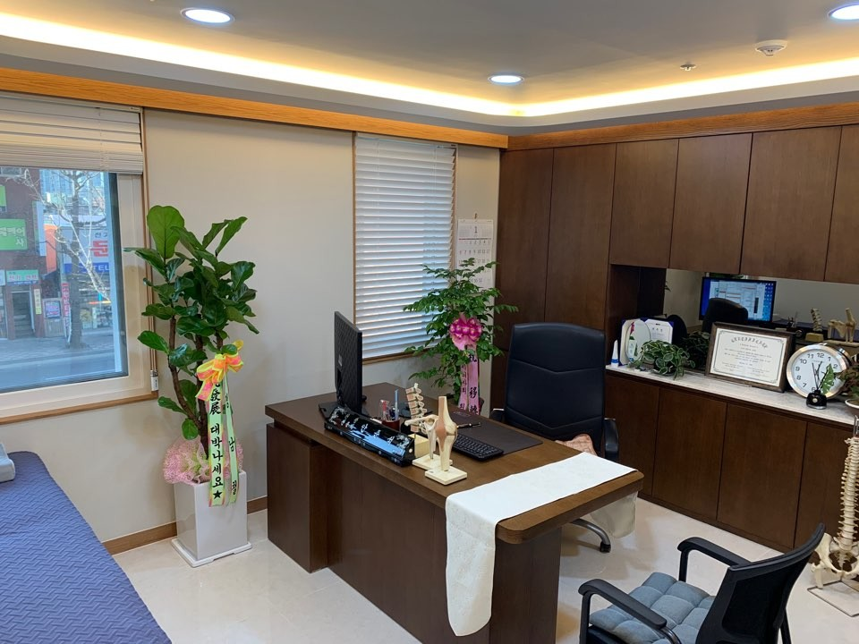
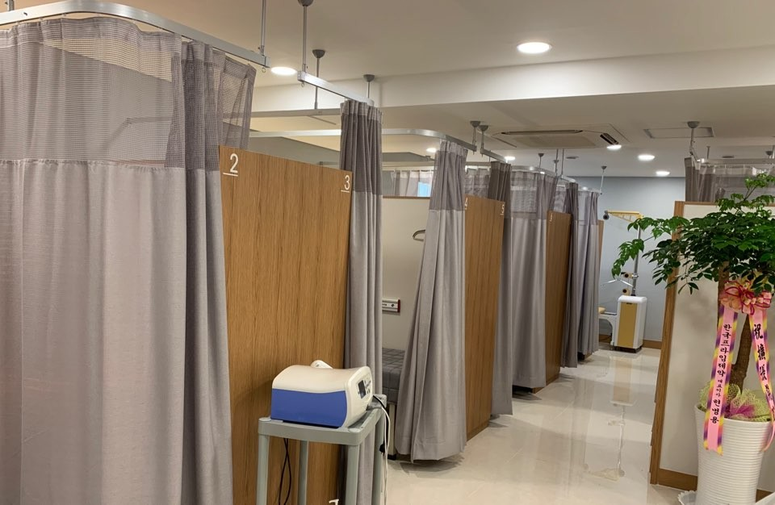
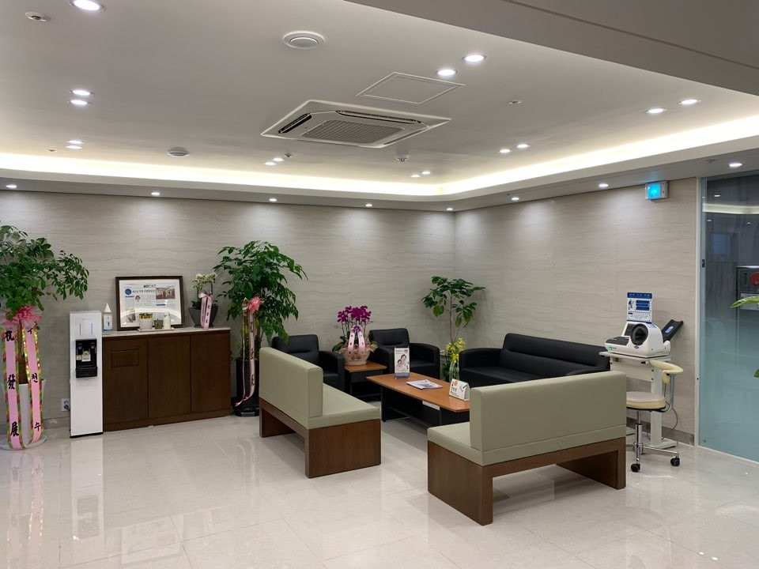

신경차단술
통증을 전달하는 신경 주위에 약물을 주입해 통증과 염증을 줄이는 치료입니다.
마취통증의학과 전문의 진료
통증의 원인을 꼼꼼히 진단하고, 몸에 맞는 비만 관리까지.
일상으로 돌아가는 길을 함께 고민합니다.
ABOUT
통증과 체중 문제는 생활 습관과 깊이 연결되어 있습니다.
충분한 상담으로 원인을 찾고, 필요한 치료만 정직하게 권해 드립니다.
문진과 이학적 검사, 필요 시 초음파 등 영상 검사로 통증의 원인을 확인합니다.
증상만 가리는 치료가 아닌, 원인이 되는 부위를 찾아 단계적으로 치료합니다.
치료 이후에도 생활 습관과 운동, 체중 관리까지 지속적으로 함께합니다.
TOUR
밝고 깨끗한 공간에서 편안하게 진료받으실 수 있도록 준비했습니다.



PAIN CLINIC
만성 통증부터 갑자기 생긴 급성 통증까지, 부위와 원인에 맞춰 치료합니다.
통증을 전달하는 신경 주위에 약물을 주입해 통증과 염증을 줄이는 치료입니다.
초음파로 병변 부위를 직접 보면서 정확한 위치에 주사합니다.
충격파 에너지로 만성 힘줄·근막 통증 부위의 회복을 돕습니다.
온열·전기 치료 등으로 근육 긴장을 풀고 회복을 돕습니다.
통증 양상에 맞춰 필요한 약을 최소한으로 처방합니다.
OBESITY CLINIC
무리한 감량보다 건강한 몸을 위한 관리. 체질과 생활 패턴에 맞춰 계획합니다.
체성분 분석과 기초 검사로 현재 상태를 확인합니다.
식습관·활동량·건강 상태를 고려해 목표와 방법을 정합니다.
필요 시 약물·주사 치료와 식이·운동 지도를 병행합니다.
주기적으로 변화를 확인하고 요요 없이 유지하도록 돕습니다.
체지방·근육량·부위별 균형을 측정해 관리 방향을 정합니다.
전문의 진료 후 적응증에 해당하는 경우에 한해 처방합니다.
실천 가능한 식단과 운동 방법을 1:1로 안내합니다.
※ 모든 치료는 개인에 따라 효과와 부작용이 다를 수 있으며, 전문의 상담 후 결정됩니다.
SKIN CARE CLINIC
전문의 상담 후 피부 상태와 원하시는 모습에 맞춰 시술을 안내해 드립니다.
표정 주름 부위 등 개인의 상태에 맞춰 용량과 부위를 정해 시술합니다.
얼굴의 볼륨과 윤곽을 고려해 자연스러운 모습을 목표로 상담 후 시술합니다.
※ 시술 효과와 지속 기간은 개인에 따라 다를 수 있으며, 전문의 상담 후 결정됩니다.
DOCTOR
대표원장 · 마취통증의학과 전문의
안녕하세요, 안준석마취통증의학과의원 원장 안준석입니다.
통증은 몸이 보내는 신호입니다. 오래 참아 온 통증일수록 일상의 작은 즐거움까지 빼앗아 가곤 합니다. 저희 의원은 환자분의 이야기를 충분히 듣고, 통증이 시작된 원인을 꼼꼼히 찾는 것에서 진료를 시작합니다.
체중 관리 역시 단기간의 숫자보다 건강하게 오래 유지하는 것이 중요하다고 생각합니다. 생활 습관과 건강 상태를 함께 살펴, 무리하지 않고 실천할 수 있는 방법을 찾아 드리겠습니다.
꼭 필요한 치료를 정직하게 권하고, 치료 이후까지 함께하는 동네 주치의가 되겠습니다.
감사합니다.
원장 안준석
HOURS
| 월 – 금 | 09:30 – 17:20 (접수마감 17:10) |
|---|---|
| 토요일 | 09:30 – 12:20 (접수마감 12:10) |
| 휴게시간 | 12:20 – 14:00 (평일) |
| 일요일 | 정기휴무 |
※ 진료 종료 10분 전 접수가 마감됩니다.
LOCATION